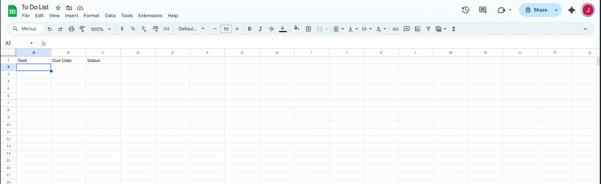
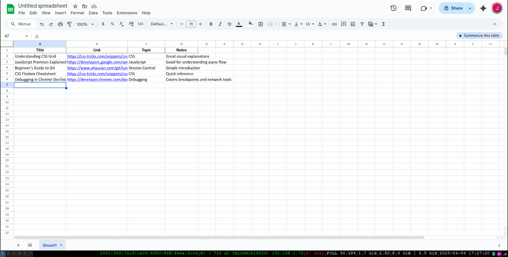
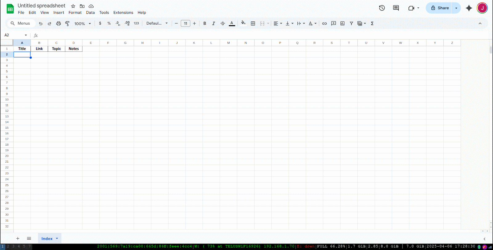
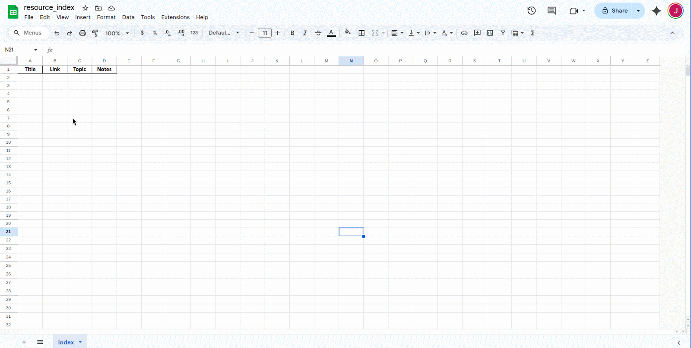
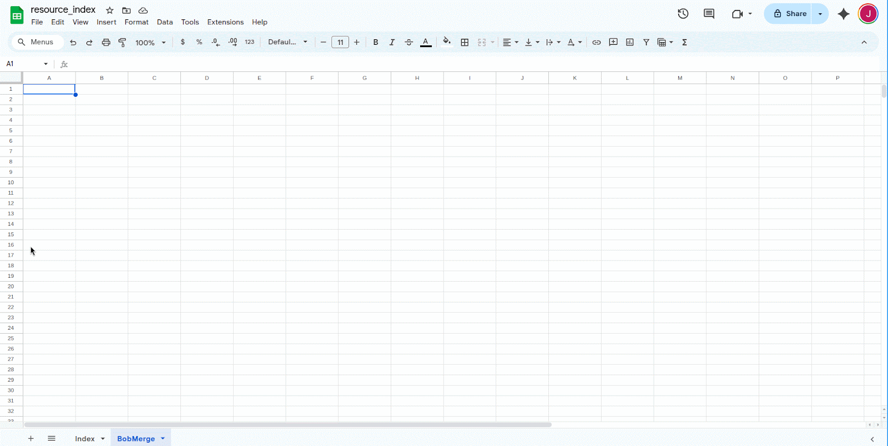
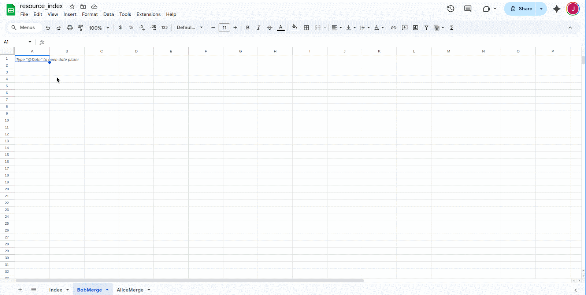
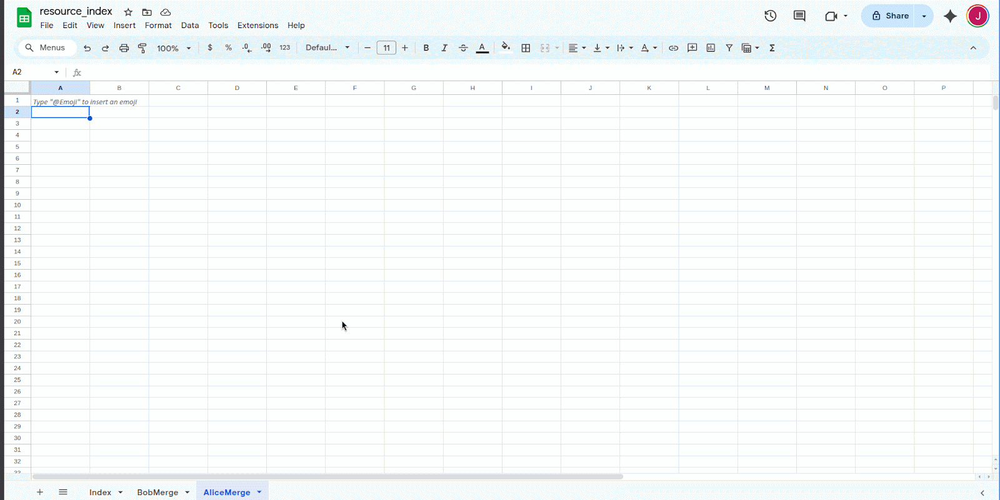
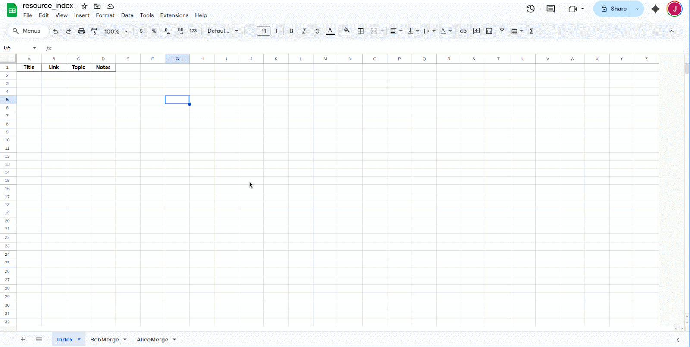
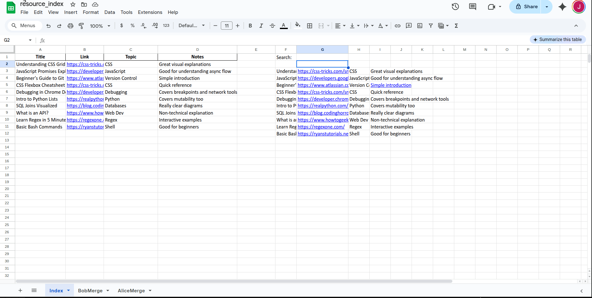

Task 3: Merge Contributor Sheets into a Searchable Resource Index
This task guides you through setting up a system in Google Sheets that imports resources from multiple contributors and combines them into a single, searchable index. You'll use IMPORTRANGE, QUERY, and FILTER to make the data live and filterable.
1 – Create or open the source sheets
Make sure each contributor has their own Google Sheet with consistent columns:
Consistency matters. All sheets should use the same column names and order.Warning
If columns don't match between source sheets, the merge step will break or produce incorrect results.
 
2 – Create a target sheet
This is where the merged index will live. Create a new Google Sheet and name it something like Resource Index.

3 – Create a sheet for the first import
Inside your target sheet, add a new sheet tab (e.g. AliceImport). In cell A2, add:
URL_A with the full URL of the contributor's sheet (without /edit?...). Click “Allow access” when prompted.

4 – Create a sheet for the second import
Repeat Step 3 in a new tab (e.g. BobImport). Update the formula to:

5 – Import data into each tab
At this point, both import tabs (AliceImport, BobImport) should display live data from their respective sheets. If not, check the URLs and click "Allow access".

6 – Merge the imported data
Go back to your main sheet and enter the following formula in cell A2:
This stacks the two imports and removes any blank rows.Tip
Add more sources by continuing the stack: {A; B; C; D; ...}

7 – Add a search bar
Choose a nearby cell (e.g. F1) and type Search:. In G1, the user can enter a keyword.
Below that, use:

8 – Protect the merged table
Select the merged data area (e.g. A2:D). Right-click, choose Protect range, and limit editing permissions. This prevents accidental overwrites.
Tip
You can still allow edits on the search bar while locking down the core table.

What you've built
You've now created a live, multi-source resource index that:
- automatically updates when contributors update their sheets
- filters by keyword using a simple search bar
- protects important data from being accidentally changed
You can expand this setup to support more contributors, add topic filters, or include a “contributor” column for sorting and attribution.